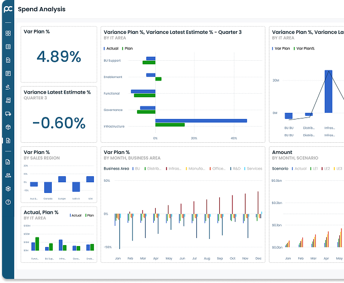

AI Powered Procurement Software for Food and Beverage Industry
ProcureClix revolutionizes food and beverage sourcing, optimizes costs, and streamlines supplier management— empowering your business with smarter procurement.

Automated three-way matching for invoices & orders

Complete Visibility into spending patterns
Barrier free centralized communication with suppliers globally
Ensure compliance with safety & quality standard
Respond rapidly to market shifts
See ProcureClix in Action
Book Your Demo Today!